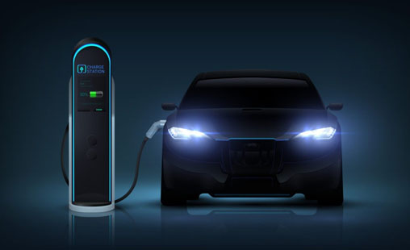

I have developed and implemented impactful solutions across multiple business sectors and business intelligence systems for international projects.
Proficient in Python, R, SQL, and Tableau, I am passionate about leveraging data to solve complex problems and drive innovation.
I thrive on collaborating with cross-functional teams and continuously seek opportunities to apply my knowledge to real-world challenges, while remaining open to learning from experienced professionals.
Jupyter Notebook :: Linear, Ridge, Lasso Regression
This project is to predict the Bay Area housing market using machine learning algorithms that can accurately predict housing prices and provide insights into the factors that impact the housing market in the Bay Area.
Jupyter Notebook :: ML Regression, Ensemble
This project is to create various machine learning models that can accurately predict the quality of Portuguese Vinho Verde wine using its physicochemical properties.
This project is focused on addressing the critical issue of credit card fraud, which has become a major concern for both financial institutions and consumers. The goal is to develop precise and efficient machine learning models that can detect fraudulent transactions.
RMD :: Classification Analysis
This project aims to predict students' academic success by utilizing different machine learning algorithms. The focus is on identifying the socio-economic factors that have an impact on students' academic performance.
View Analysis

This project is to create an interactive Power BI dashboard for tracking emergency supply procurement in Ukraine.
This project is to create user-friendly and interactive dash board for EV owners. They will be able to search for near by charging stations in Ausin, Texas.
This project is to create user-friendly and interactive dash board for EV owners. They will be able to search for near by charging stations in Ausin, Texas.
This project is to create an interactive and informative data visualization that displays real-time traffic incident reports in Austin, Texas.